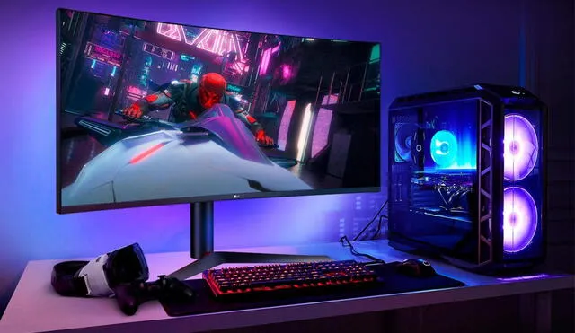
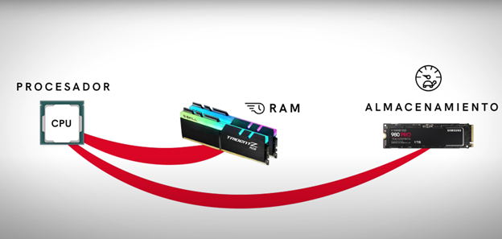
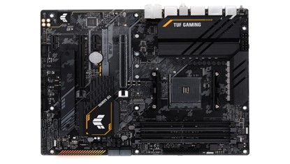
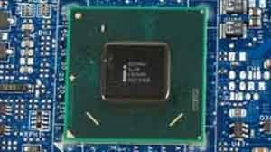
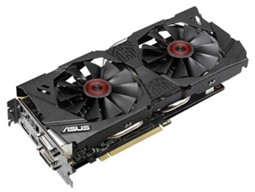
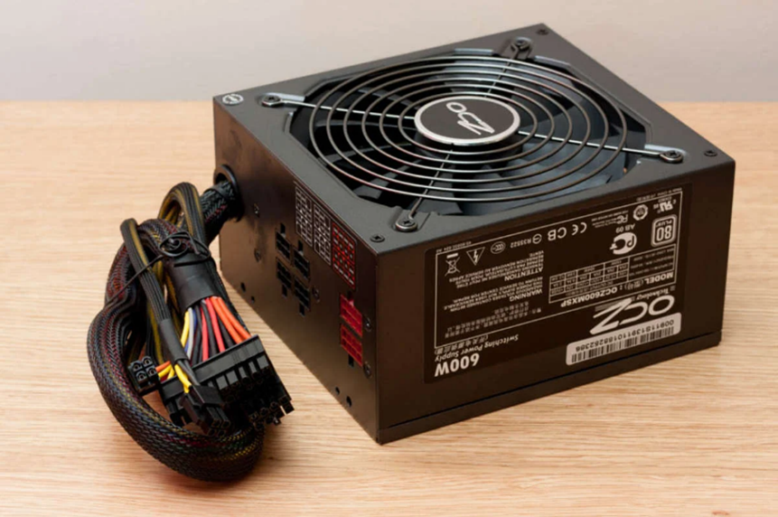

| Funcionamiento- | PC |
| Una computadora es una maquina concisa capaz de almacenar información digital y procesar varias instrucciones mediante operaciones matemáticas y lógicas, nos facilita facilitar nuestra vida cotidiana, almacenar datos, realizar tareas sencillas y nos sirve como medio de entretenimiento y herramienta de trabajo |  |
| Funcionamiento | IMÁGEN |
| *RAM La RAM (Random Acess Memory) esta en el medio del almacenamiento interno ósea la memoria a largo plazo y el procesador Básicamente sirve para que en su lugar de cargar datos directamente de aquí al procesador los carguemos de aquí a la RAM el procesador trabaja trabaje con ellos básicamente desde la RAM y luego cuando hace falta guardarlos para que no se borren nunca más pues los meteríamos de nuevo en el almacenamiento de turno. |
 |
| *Placa Base Como la fuente de poder necesita llevar esa energía hacia nuestro ordenar necesita ser conectado en la Placa base en el ATX o EPS o CPU, aquí regula la energía que necesita nuestro ordenador. |
 |
| *PCH El PCH o Platform Controller Hub el controlador de la plataforma es básicamente a lo que se dedica es a captar todas las señales de los USB del sonido, de la tarjeta de red etc. Básicamente de todos los periféricos que tenemos externos y el PCH gestiona quien y como se comunican con el procesador, el PCH tiene una conexión directa con el procesador a través de unos Buse super rápidos lo cual se encarga de administras todas las conexiones. |
 |
| *Tarjeta Gráfica Nos permite a conectarla a la Placa base en PCIE ahí tiene acceso directo al procesador para que la comunicación sea directa. El procesador le pide a la tarjeta que cree pixeles para ver una imagen o visualizar un video esto tiene que ser muy rápido extremadamente rápido y en tiempo real y con una gran cantidad de datos, el procesador repara todos los datos para que la tarjeta necesita para nuestra memoria RAM los envía a la memoria de video de la tarjeta grafica y le manda instrucciones al procesador grafico para ver los que necesita nuestra PC. |
 |
| *Fuente de poder Lo que nos ayuda la Fuente de poder es convertir los Volteos que nos llegan de la calle y los transforman en distintas cantidades para llevarla la corriente a nuestro ordenador. El procesador le pide a la tarjeta que cree pixeles para ver una imagen o visualizar un video esto tiene que ser muy rápido extremadamente rápido y en tiempo real y con una gran cantidad de datos, el procesador repara todos los datos para que la tarjeta necesita para nuestra memoria RAM los envía a la memoria de video de la tarjeta grafica y le manda instrucciones al procesador grafico para ver los que necesita nuestra PC. |
 |